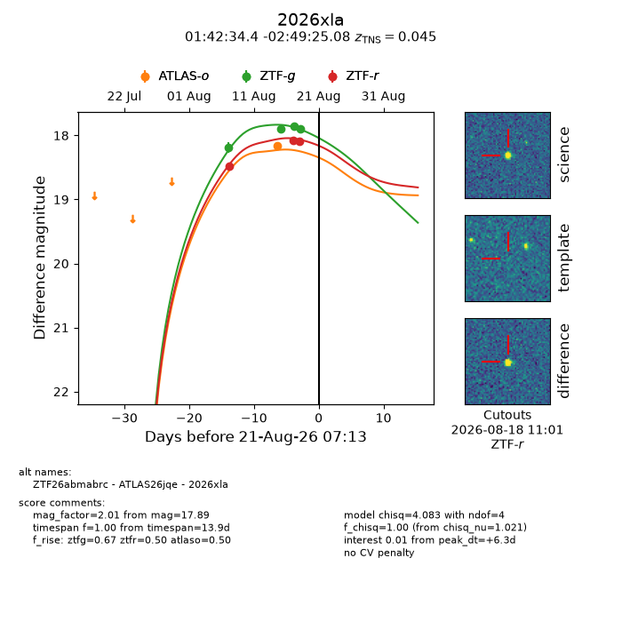
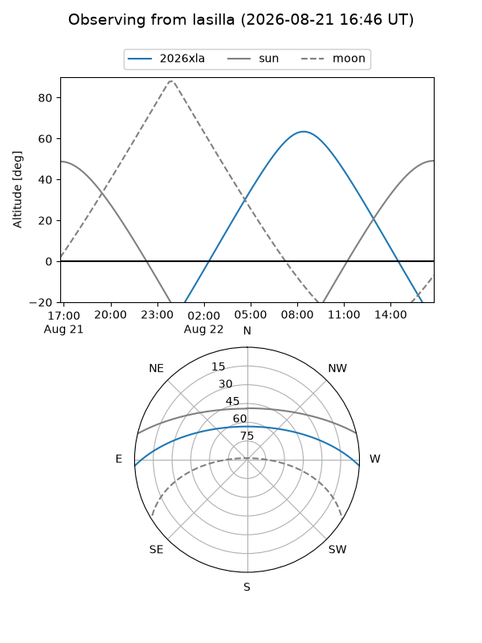
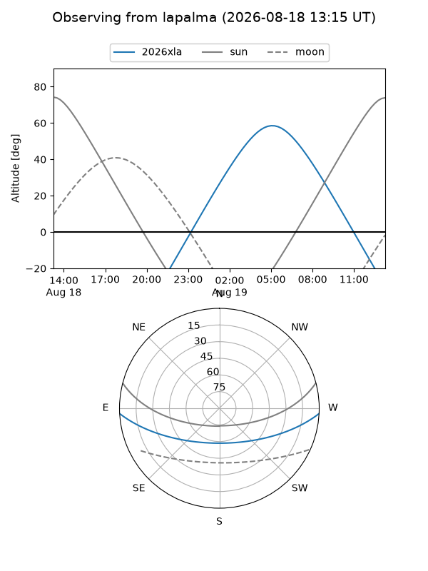
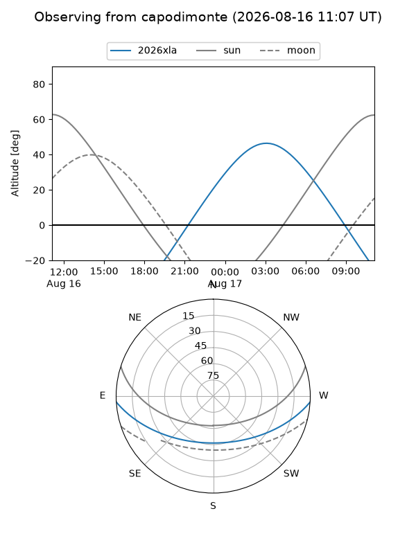
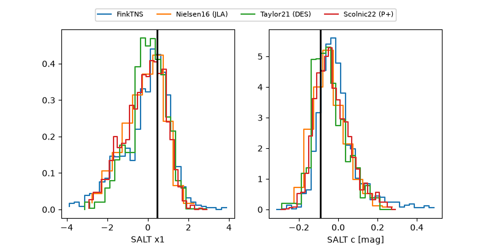

2026xla
Target 2026xla at 2026-08-21 07:17
Aliases and brokers:
FINK-ZTF: ztf.fink-portal.org/ZTF26abmabrc
Lasair-ZTF: lasair-ztf.lsst.ac.uk/objects/ZTF26abmabrc
ALeRCE-ZTF: alerce.online/object/ZTF26abmabrc
YSE-PZ: ziggy.ucolick.org/yse/transient_detail/2026xla
TNS name: wis-tns.org/object/2026xla
Direct TNS query: direct search
alt names
ZTF26abmabrc (ztf,fink_ztf)
2026xla (tns,yse)
ATLAS26jqe (atlas)
Coordinates:
equatorial (ra, dec) = 25.6432,-2.82363
equatorial (HMS+DMS) = 01:42:34.36,-02:49:25.08
galactic (l, b) = (151.8347,-62.78996)
Flags:
TNS type: SN Ia
TNS redshift: 0.0450
peak dt: +6.3
Photometry:
last atlaso=18.16, ztfg=17.89, ztfr=18.09
1 atlaso, 4 ztfg, 3 ztfr detections
Lightcurve

Visibility



Additional plots
